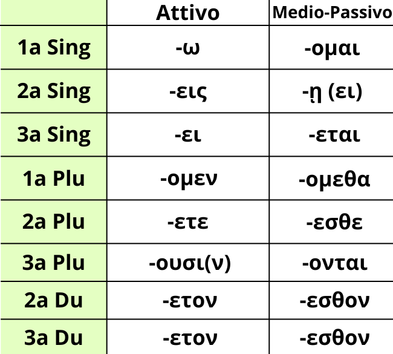

I verbi in Greco Antico sono per la maggior parte facenti parte della coniugazione tematica, riconoscibile dalle desinenze.
In questo gruppo di coniugazioni si prende il tema verbale, ricavato togliendo la desinenza, a cui si aggiunge la desinenza della persona che si vuole esprimere, aggiungendo inoltre tra essi la vocale tematica, che può essere (ο) se la desinenza comincia per una nasale (ν/μ) oppure ε in tutti gli altri casi.
Impara bene le desinenze riportate nella tabella sopra, poiché il verbo, come d'altronde in italiano e in latino, è il cuore della frase, dove tutto gli gira intorno. Grazie a lui infatti si è capaci di individuare il soggetto, capire dove posizionare e come tradurre un accusativo,...